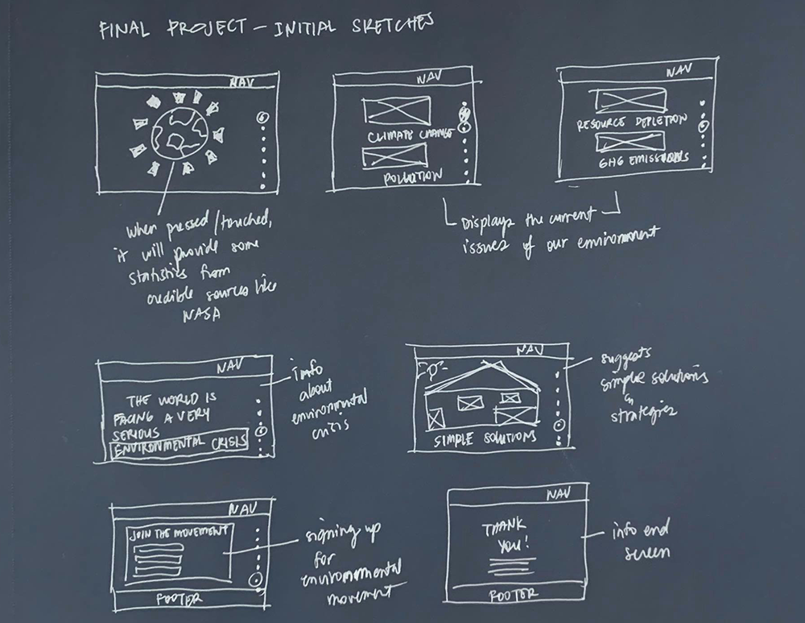

Final Project - Initial Sketches

My initial sketches is a narrative form which includes the scroll function and navigation bar. The first page shows an illustration of our planet earth. I wanted to have it a function rather than just a 2D drawing. When a user pressed it or touched it in mobile version, it will pop out some statistics of carbon footprint from credible sources such as NASA. The scroll function will lead to different illustartions and stories about the current issues of my topic and will lead to my main topic then solutions. The last page is a petition signing page or a movement sigining page. Then a thank you when submitted. The use of making a webpage a narrative form with scroll function helps users to be engaged and interested with the webpage